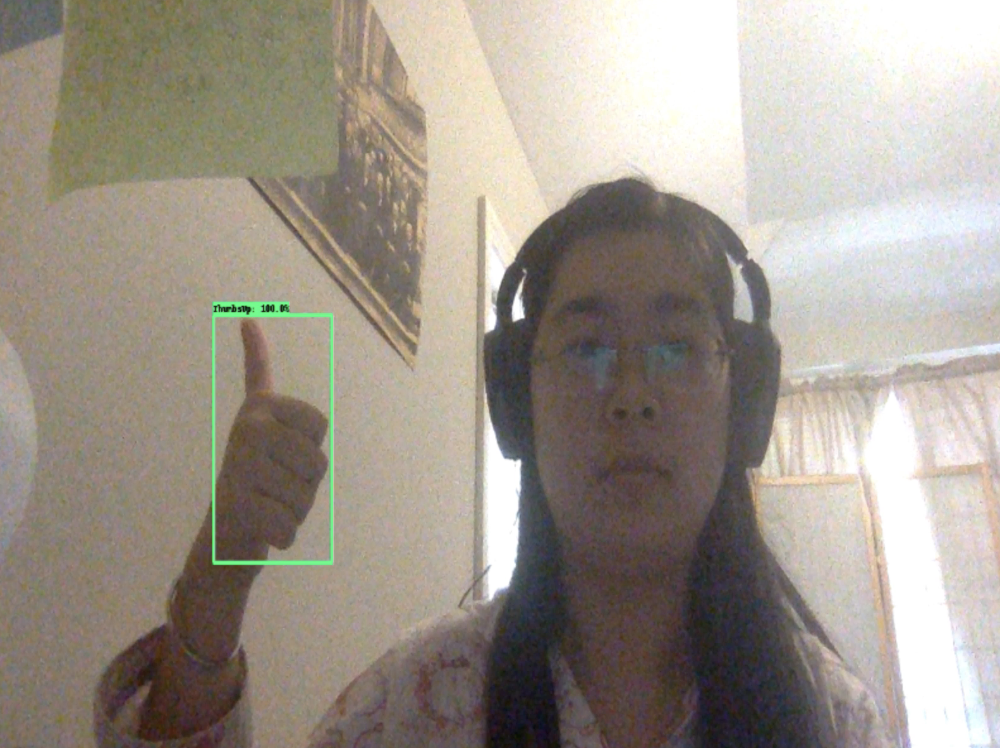
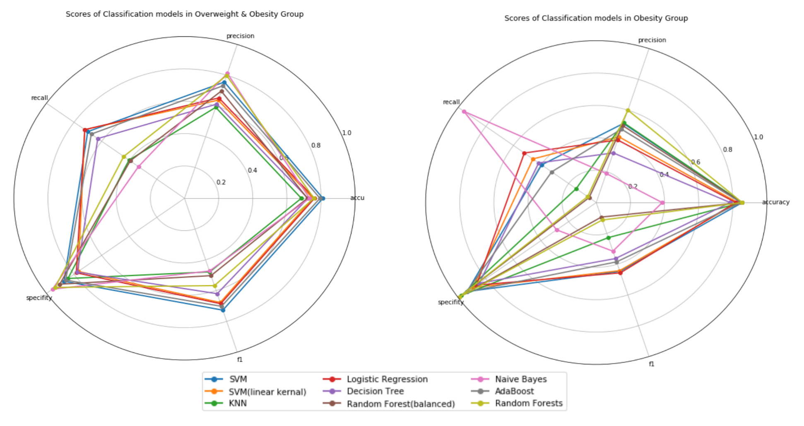

A Bioinformatics Scientist & Data Scientist, skilled in Python and R, also familiar with SQL, MATLAB and JavaScript. I’ve got lots of experience from data cleaning to model building and prediction. Together with my biology background, I also have years of study in the next generation sequencing and single cell sequencing data analysis. I consider myself highly organized, always plan and follow my checklist to handle multitasks.
EDUCATION
M.S in Data Science
City College of New York, New York
Major Areas:ETL, Data cleaning, Database buildup, SQL, Data analysis, Machine learning and model building，Data visualization.
Relevant Coursework:Applied Machine Learning, Big Data, Applied Statistics, Database System, Data Engineering, Computer Vision，Bioinformatics.
M.S in Biology Engineering
University of Chinese Academy of Sciences, Beijing
Research Topic: High-throughput sequencing of soil microorganisms and their relationship with extreme climate change.
Publication: [1]Li L, Fan W, Kang X, et al. Responses of greenhouse gas fluxes to climate extremes in a semiarid grassland[J]. Atmospheric environment, 2016, 142: 32-42.
[2]Gao W, Reed S C, Munson S M, et al. Responses of soil extracellular enzyme activities and bacterial community composition to seasonal stages of drought in a semiarid grassland[J]. Geoderma, 2021, 401: 115327.
Analytical Biosciences (focused on single-cell RNA-seq)
Use Python to do quality control of single-cell RNA-seq data and functions. Ensure data reliability and function stability. I’ve helped build up the world’s largest single-cell RNA-seq database.
Demonstrate our product (OmniBrowser and OmniAnalyzer) to clients, and collect their feedback. I’ve hold several seminars with clients from drug manufacturers to scientific institutes.
Design new & upgrade product functions such as auto annotation, biomarker discovery, and user visualization interface. Analyze dozens of competitor’s product. I’ve helped our product to iterate twice and go to market.
Auditor&Customer Service
New York Service Center for Chinese Study fellows. Inc
Review, process applications, and help the applicants.
Coordinate with higher authority to implement policy. Detect inaccuracy and confirm the correct information. I’ve helped thousands of clients to achieve their goals.
Bioinformatics Engineer
Somur Beijing technology co. LTD (Health Care Providers and Services)
Project R & D and technical support.
Collect and Clean next-generation sequencing data. Build up an analysis pipeline from scratch.
Build models base on published papers and our data to predict indexes for the clients’ health report. I’ve analyzed thousands of infants’ and adults’ RNA-seq data and Generated personal reports for clients.
Publication:Liang B, Fan W, Han J G, et al. An implementation of infants' gut microbiome maturation analyses by 16s rRNA from stool samples in extraction solution of room temperature[C]//2017 IEEE International Conference on Bioinformatics and Biomedicine (BIBM). IEEE, 2017: 910-914.
PROJECTS
Machine Learning for Childhood Obesity
Utilize machine learning to discover the potential influencing drivers for childhood obesity from a questionnaire dataset.
ETL, data exploration, clean data and deal with missing values with multiple imputation. Deal with unbalanced data.
Use Classification estimators to build models then find the most influencing features.
Use Clustering & Regression to target the possible cause of childhood obesity.
Big Data: Geo-Distribution of Drug Abuse Related Tweets
Compute the density of drug abuse related tweets within 100 million geo-tagged tweets in urban level within minutes.
Spatially filter targeted tweets within census tracts.
Sum the tweets based on geographical boundaries and normalize the results by their population.
[Skills Developed]: Spark, Python.
Build Up a School Website
A website was built including a server and a client interface for students, faculty and admin. This was a group project and I was responsible for the faculty page where faculty can login their accounts and manage their courses. This project was executed with React.
Build up a faculty page.
Implement functions for the faculty to add students to a course, add assignments, and give grades.
Build a suitable model with R to estimate sea surface temperature with data collected from satellites radiometer instruments. Backward selection was used to simplify the original model, and attributes reduced from 10 to 2 without significant loss of performance.
ETL, variable preparation and split.
Backward selection.
Find an acceptable simplified model.
[Skills Developed]: R, DAAG, leaps, testthat.
Computer Vision: Door Detection
Identify the door in a photo with computer vision.
Edge detection.
Hough transfer to remain and connect lines.
Filter properties to find the door.
[Skills Developed]: MATLAB.
Microbiome Shift Analysis under Extreme Climate Change
16s rRNA sequencing and studding the microbiome variation under extreme drought, heatwave or precipitation frequency change.
DNA extraction and next generation sequencing.
Data processing to generate OTU table.
Analysis the microbiome variation under different treatment.
[Skills Developed]: Linux, Qiime.
Gug Microbiome Analysis Pipeline Buildup & Explore its Relationship with Human Health
Set up the production pipeline of next generation sequencing data processing. Explore the relationship of human gut microbiome and infants' gut microbiome maturation, chronic disease, obesity, and mental health.
Build up a pipeline for 16s rRNA sequencing data.
Predict human health indexes based on published results.
Analysis the microbiome variation under different treatment.
[Skills Developed]: Linux, Qiime, Perl.
SHOWCASE
A screenshot from my Tensorflow gesture detection model test result, I used transfer learning with model SSD MobileNet v2 320x320 which was trained on the COCO 2017 dataset.

Video test sample of the gesture detection model. Four gestures including ThumbsUp, ThumbsDown, ThankYou, and LongLive, was trained, each class incude less than 10 training images labeled by myself.
The overall result is good, and model can be improved with more images.
Model selection visualization from my Machine Learning for Childhood Obesity project. On the left is the test result for overweight and obesity groups. On the right is for obesity group only.
Each model is shown with different color.
There shows 5 scores for each model, accu for accuracy, precision, recall, specificity, and f1 for F1 score.

Dynamic change graph made with tableau, showing the story of time about me and my husband. It's a small gift to my husband for the Chinese Valentine’s Day.